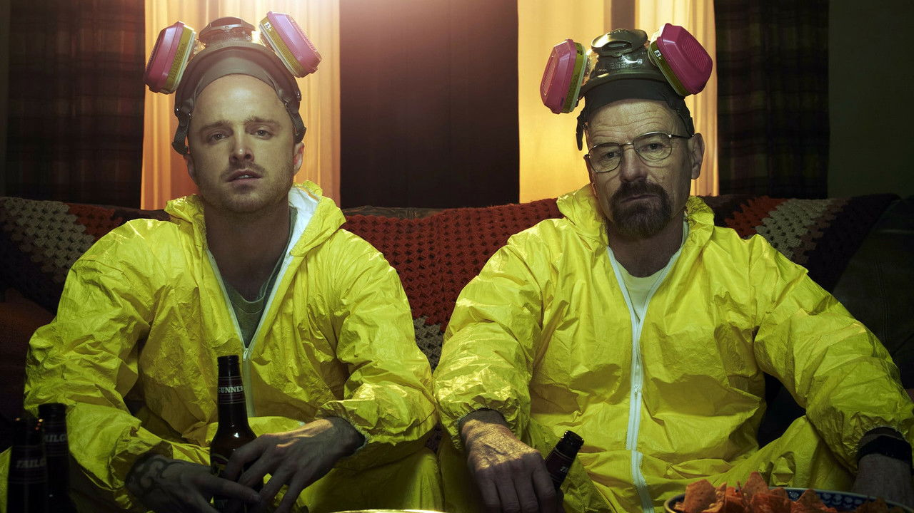

絕命毒師
Breaking Bad (2008–2013) · 主創：文斯·吉利根 · 主演：布萊恩·克萊斯頓、亞倫·保羅
「你問我是誰？我不是身陷危險之中，史凱勒，我就是危險本身。當有人開門被開槍擊斃，你以為那個人是我？不，我就是那個敲門的人！」
★ 多維度深度評析
綜合評析指數：9.8 / 10極力推薦觀看群體
- 熱愛縝密嚴謹犯罪劇與人性心理轉折的觀眾
- 追求「零爛尾」、各季口碑持續走高的神劇愛好者
- 欣賞細節伏筆與頂級角色演技的深度影迷
可能需要心理準備
- 前兩季節奏鋪陳較為沉緩，習慣速食無腦打鬥者需有耐心
- 劇中道德界線崩塌極致，抗拒陰暗、壓抑氛圍者請斟酌
無雷簡介與推薦指南
生活在美國新墨西哥州阿爾伯克基的平凡高中化學老師華特·懷特（布萊恩·克萊斯頓 飾），一生謹小慎微、懷才不遇。在五十歲生日隔天，他意外被診斷出罹患肺癌末期，只剩兩年壽命。面對沉重的醫療債務、懷孕的妻子與患有腦性麻痺的兒子，絕望的華特做出了驚天動地的抉擇——聯手昔日逃課的問題學生傑西·平克曼（亞倫·保羅 飾），以一台老舊露營車為基地，利用頂尖的化學純度提煉出黑市前所未見的 99.1% 純度「藍色冰毒」。
全劇被譽為「電視史上最偉大的性格質變實驗」——將一位懦弱平庸的「奇普斯先生（Mr. Chips）」一步步淬鍊蛻變為令人聞風喪膽的傳奇大毒梟「疤面煞星（Scarface）」。文斯·吉利根以登峰造極的劇本結構、象徵色彩學與壓迫感極致的運鏡，創造了一部近乎完美的美劇教科書。
⚠️
深度劇情剖析與結局討論（含重大劇透）
本區塊包含海森堡的心理轉化、漢克之死與《血・毒・淚》世紀大結局深度解析
▼
深度劇情剖析與結局討論（含重大劇透）
本區塊包含海森堡的心理轉化、漢克之死與《血・毒・淚》世紀大結局深度解析
#1 海森堡的魔咒：「我做這一切，全是為了我自己」
整整五季裡，華特無數次對家人說：「我做這一切都是為了這個家。」但在最終大結局《血・毒・淚》（Felina）面對史凱勒時，華特終於撕下了偽善的藉口，坦承吐露肺腑之言：「我做這一切是為了我自己。我很享受，而且我真的很擅長。這讓我……真正感到自己活著。」這句坦白是華特一生中最誠實的高光時刻，承認了深埋於內心對權力、掌控與世人敬畏的純粹渴望。
#2 傑西·平克曼的救贖：狂暴雨夜裡的自由狂嘯
傑西是整部罪惡史詩中唯一的道德錨點。他經歷了簡的窒息死亡、蓋兒的槍殺夢魘、安德莉亞在眼前的慘死，以及被囚禁為製毒奴隸的非人折磨。在最後一刻，當華特將槍推到傑西面前要他殺死自己時，傑西堅定地拒絕成為華特的執行工具：「你想要的話，自己動手。」開著雪佛蘭衝破鐵柵欄在夜色中放聲嘶吼的傑西，終於奪回了靈魂的自由。
#3 《奧茲曼迪亞斯》與《血・毒・淚》：古典悲劇的巔峰收官
第 14 集《奧茲曼迪亞斯》（Ozymandias）以 IMDb 滿分 10.0 的神蹟見證了帝國的瞬間瓦解——雪萊的名詩「看看我的豐功偉業吧，強者啊，並陷入絕望！」成為海森堡黃金帝國灰飛煙滅的最諷刺註腳。而在終章，伴隨著 Badfinger 的經典名曲《Baby Blue》，中彈的華特微笑撫摸著化學儀器安詳倒在血泊中，死在他唯一深愛且精通的世界裡，為這段現代浮士德的罪惡狂想劃下了完美無缺的休止符。